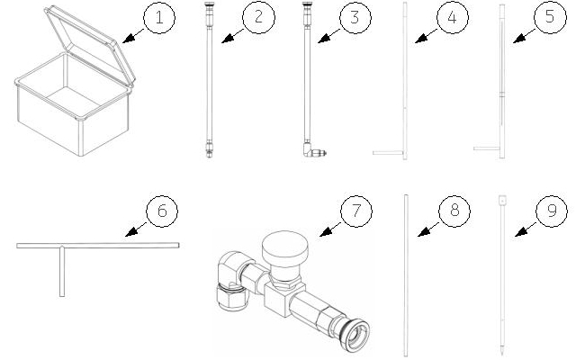
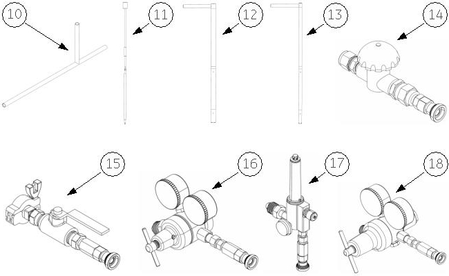

Operating Documentation
Direction 5440001-3, Rev# 6
Signa HDxt Service Methods
Module Version 1.0, Version Date 2/9/10
Operating Documentation |
Illustration 1: Deicing Toolkit 5263845 Components
(Sheet 1 of 2

(Sheet 2 of 2

Table 1: Deicing Toolkit 5263845, Rev. 2
| Item | Part Number | Qty | Description | Spare |
|---|---|---|---|---|
| 1 | 5264712 | 1 | Case, Deicing Tool, Pelican 1620 | N |
| 2 | 5266224 | 1 | Hose Assembly, 20 ft | N |
| 3 | 5270565 | 1 | Hose Assembly, 3 ft | N |
| 4 | 5248857 | 1 | Insulated Fill Port Coring Tool | N |
| 5 | 5248855 | 1 | Insulated Ramping Port Tool | N |
| 6 | 2280035 | 1 | Tool, Ice Coring | Y |
| 7 | 5266208 | 1 | Gas Wand Valve | N |
| 8 | 5248860 | 1 | Gas Wand Tube | N |
| 9 | 5248856 | 1 | Insulating Ice Chipping Tool | N |
| 10 | 5248765 | 1 | Tool, Fill Port Coring | N |
| 11 | 5248852 | 1 | Ice Chipping Tool, Low Ceiling Height | N |
| 12 | 5248766 | 1 | Ramping Port Coring Tool, Low Ceiling Height | N |
| 13 | 5248851 | 1 | Tool, Fill Port Coring, Low Ceiling Height | N |
| 14 | 5270768 | 1 | Recondenser Deicing Valve | N |
| 15 | 5268231 | 1 | Vacuum Valve For Recondenser | N |
| 16 | 5266816 | 1 | Regulator, 75 PSI w/Quick Connect | N |
| 17 | 5268307 | 1 | Flowmeter w/Quick Connect | N |
| 18 | 5271429 | 1 | Regulator, 15 PSI w/Quick Connect | N |